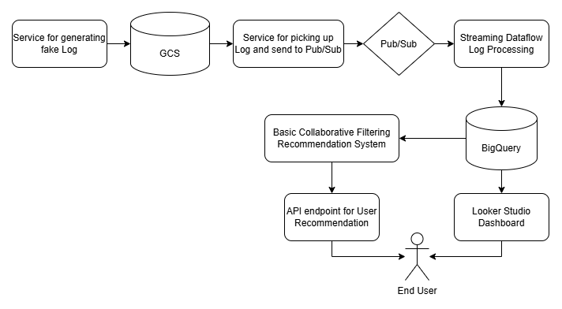

📊 Data Pipeline Architecture
This project utilizes Apache Beam and Google Cloud Dataflow to process app usage data from a simulated stream.
Every 10 minutes, data is published to Pub/Sub, which is then processed and streamed into BigQuery.

For detailed implementations, explore the following Jupyter notebooks:
🗃️ Data Serving & Backend
- BigQuery: Partitioned tables with materialized views to optimize cost and dashboard performance.
- Dashboard: Built with Looker Studio, enabling cross-filtering and real-time insights.
- Recommendations: Matrix Factorization-based collaborative filtering, updated daily using a Blue-Green deployment strategy.
📈 Embedded Dashboard
🤖 Personalized Recommendations
Select a user below to retrieve app usage predictions based on past behavior: